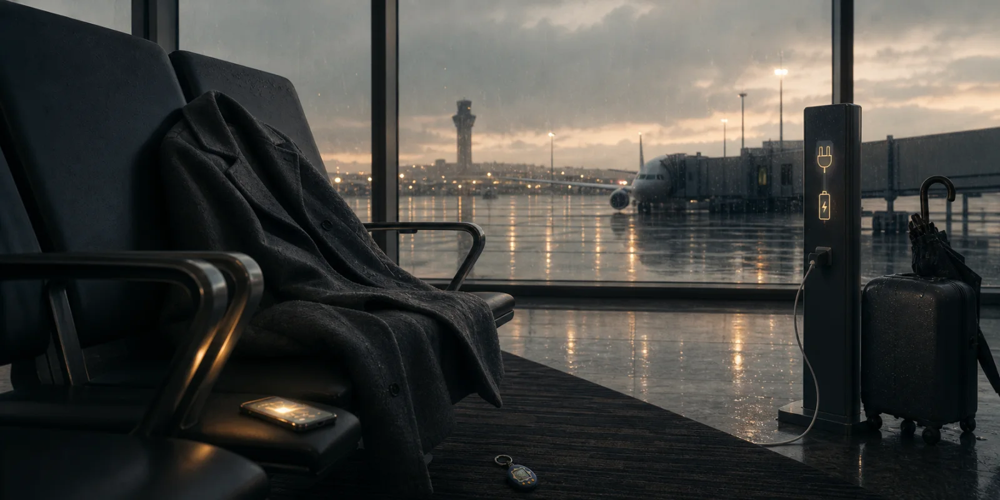
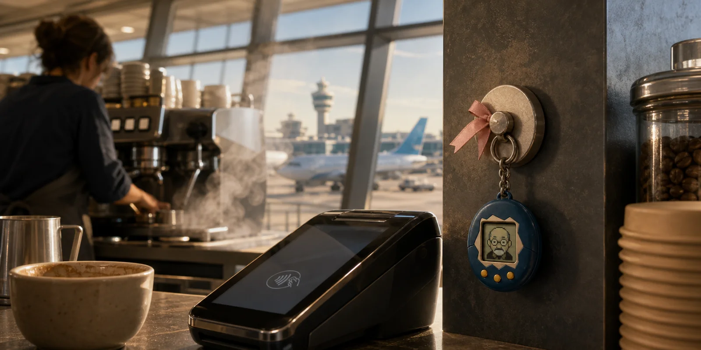
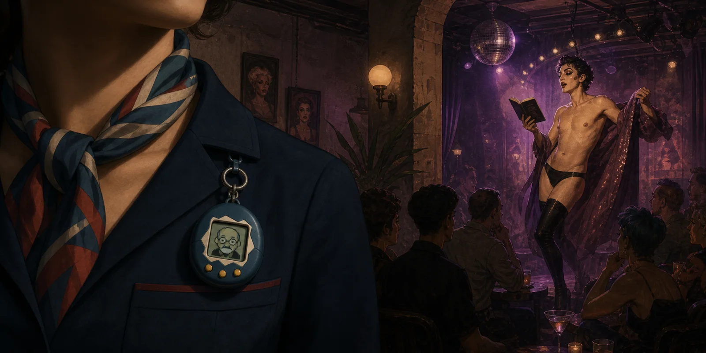
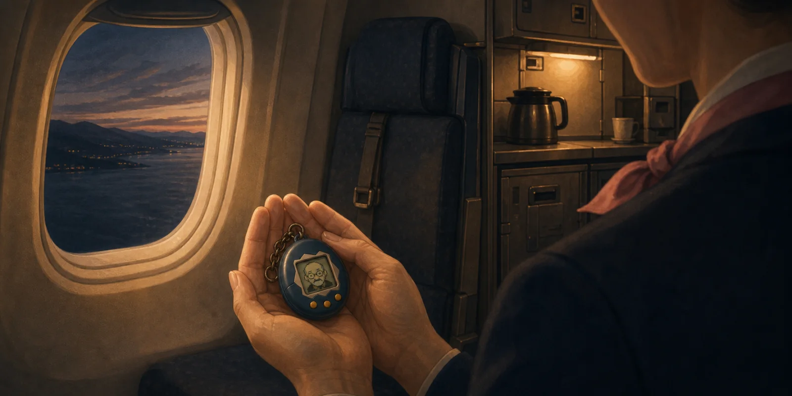

Bergen Departure

It had been raining in Bergen for nine days, the kind of November rain that does not so much fall as suspend itself in the air at the height of a man's face, and Trygve Aas, who was a man and seventy-six, walked through it from the taxi to the terminal entrance without pulling up his hood, because pulling up the hood would have meant admitting that the rain had a claim on him. The driver had said gud reise and he had not answered. The driver was Eritrean, or Somali — Trygve had once known the difference and had since elected not to maintain it — and had been kind in the way drivers in Bergen are kind, which is to say without expectation. Trygve walked into the terminal carrying his carry-on by the handle, not the strap, because the strap was for people who needed both hands free, and Trygve Aas had not needed both hands free in forty years.
The SAS desk was open. The woman behind it had the badge Linnea and the patient blankness of someone whose shift had begun at four. She greeted him. He gave her his passport without greeting back. He had not said good evening to a stranger since 1989, on principle, though he no longer remembered what the principle was. She read his ticket and told him the Amsterdam flight was delayed.
"For how long," he said. Not as a question.
Linnea told him: indefinite. There was weather over the North Sea. The system would update. She offered to put him in the lounge.
"The lounge," said Trygve, "is full of children." This was not true; he had not seen the lounge that night. He said it because saying it relieved a small pressure inside him.
Linnea wished him a pleasant onward journey in the language they had been speaking, which was English now because his Norwegian, when annoyed, had become curt enough to embarrass him. He took back his passport. He did not say takk.
Outside the lounge an attendant whose name he did not look at offered him sparkling water and he said no without looking at her. He sat down where there was a free chair facing the window. The window faced the runway. The runway was not visible because the rain at four in the morning had thickened to the texture of weak coffee. A clock ran above the gate display. The Amsterdam flight, when the system finally updated, had been rebooked for 6:15. He had four hours.
In the third hour the attendant came back and offered him a sandwich, complimentary, and he said: "I ate." He had not eaten. He had not intended to be cruel; the sentence had simply arrived already-formed, the way most of his sentences had arrived for forty years. The attendant smiled the smile that staff smile when a sentence does not require an answer. She moved on.
He left the lounge at half past four because he could not stand its lighting and walked down the long concourse to gate D14, which was where Amsterdam now departed from. The concourse at half past four had nobody in it. The shops were closed behind their security mesh. A janitor's trolley was parked outside the duty-free, no janitor visible. The PA played, very softly, a short Norwegian announcement followed by its English translation, in a voice trained to sound like calm itself.
He sat at a charging station opposite the gate. He plugged in his phone, which was on seven percent. The seat was the kind with a small flat surface beside the armrest, designed for a coffee cup but used most often for a phone. He set his phone on the surface. He opened the browser.
He had been thinking about the site for three days, ever since a man in Oslo whose company he had bought in 1998 had mentioned it at a dinner with the sort of grin that wanted to be discovered. Trygve had filed the URL in the bottom of his memory. He typed it now. The site loaded.
It was, on the surface, a leaderboard. A scrolling list of usernames with their net-position-in-the-last-hour displayed in a font that had been chic in 2018 and had since become only itself. Above the leaderboard was a video feed. The video feed showed the faces of people losing money. They had agreed to be filmed; the agreement was a clause; the clause was the product. Watch them all cry, the banner said, in a black-and-cyan typeface that looked as though it had been designed by a digital agency in Limassol that had since rebranded twice as a Web3 consultancy and then ceased to exist, the way nothing on the internet is ever finished, only pivoted. The site was what crypto had become once it stopped pretending to be a currency: a stadium for other people's losses, monetised, with a leaderboard. He could not stop scrolling.
He watched a man in what appeared to be a Bucharest kitchen lose forty-two thousand euro in eleven minutes. The man cried in the way men cry who have not cried since they were nine. Trygve watched until the cry became boring. Then he watched a woman in a Mumbai office building lose her three-month savings in a single position. She did not cry. She closed the laptop and looked at the ceiling and said something in a language he did not know. The site flagged her as low-engagement. He moved on.
He did not feel pleasure exactly. He felt the small administrative satisfaction of a man auditing a portfolio that was not his own.
The notification arrived in the corner of his eye in the manner of a software update: a soft chime, a small banner, Tap to continue. He did not tap it. He had not tapped a banner since 2014. The banner did not require him.
What happened next did not happen in a sequence he could later assemble. There was a sensation in his teeth. There was a sensation, also, in the soles of his feet and in the place behind his sternum where coffee sometimes registered. The lighting of the concourse altered very slightly, a half-stop down, the way a lift changes pressure. His phone, which was charging, fell over onto the small flat surface and made a sound that was not the sound of a phone falling. The sound was nearer. The sound came from him. The sound was him.
He understood, with the part of his understanding that was still his, that he was now smaller than the phone. Then that he was not next to the phone but beside it, in a different category from the phone, on the carpet near the leg of the seat. Then that the carpet, which had previously been a surface, was now a country. Then that he had a face and that the face was on the front of him. Then that the front of him was a screen.
The thing that had been his name was etched into the small frame around the screen, in a sans-serif chosen perhaps by software for legibility: Trygve Aas. Not Tamagotchi. There was no other word on him. He had a button on his right side. He could feel, without a tongue or a mouth, that pressing the button would let him speak. He did not press it.
It was 4:53. The PA played the soft Norwegian announcement again.
The cleaning trolley arrived at gate D14 at four minutes past five. The trolley belonged to Marielle Aragon, who was thirty-eight, who had emigrated to Bergen from Quezon City in 2011, and who worked the ten-to-six shift at Flesland four nights a week for a contractor whose name changed every two years but whose uniforms stayed the same blue. She wore a single AirPod, the left one, because the right had been lost in March and the contractor had not replaced it. From the AirPod, very quietly, came a Tagalog podcast in which a priest in Manila was explaining the Gospel reading for the Sunday two days hence. She had heard this priest's voice almost every night for a year.
She wiped down the charging-station surface where Trygve's phone still lay plugged in. She noted the phone, which was unattended, and made a small mental file of it for the lost-and-found run she did at the end of her shift. She bent at the knees, not at the back, because her knees were better than her back, and she retrieved the small object from the carpet near the leg of the seat. She held it in her palm.
The object was the size and weight of a car keyfob. It had a faux-aluminium frame and a small screen on the front. The screen, in the pre-dawn lighting of the concourse, showed a face. The face had eyes. The eyes were tracking her.
The 1.5 seconds in which Marielle Aragon understood what she was holding were not, in fact, surprised seconds. Marielle Aragon had been raised in a house in which the dead spoke through the radio static and the saints intervened in matters of debt, and she had had eight years in Bergen to train herself out of expecting these phenomena to register on the faces of Norwegians. She had not trained herself out of recognising them. She looked at the small screen. The small screen looked at her.
She said, in her quiet voice, in English, "Hello, sir."
She did not know why she had said sir. The face did not look like a sir. The face looked like an old white man in his seventies, which was a category of person she had served at this airport perhaps eight thousand times, and sir was the word her mouth produced for that category whether or not she had been asked to.
She put him in the chest pocket of her uniform and finished her sweep of D14 with him there. He hung against her sternum, beside the small holy card of San Lorenzo Ruiz (1594–1637), the first Filipino canonised saint and a man martyred in Nagasaki, that Marielle Aragon kept in this pocket on every shift and that the contractor did not know was there. He could hear, through the fabric and the very thin layer of his own casing, the priest from Manila explaining something about a fig tree.
KLM opened the gate at twenty past five. The first cabin crew through the door was Anouk de Jager, twenty-eight, based in Hoofddorp, on the Bergen rotation for the third week, lanyard on, KLM purple, small silver hoop in each ear, hair in the high tight bun cabin crew had been wearing this season. Marielle, who had finished her sweep, was standing at the gate with the small object held in both hands the way one holds a bird that is recovering. She intercepted Anouk just past the desk.
"Excuse me, miss," said Marielle. "I find this. By the chair. I don't know."
Anouk looked at what Marielle was holding. Anouk had been awake since three. Anouk's training had not covered this. Her training had covered, in some detail, what to do if a passenger was found unconscious at the gate, or having a panic episode, or attempting to board with a falcon. Her training had not covered a small electronic device in the shape of a keychain whose screen was making, very slowly, a face of distaste.
"It is alive, this," said Marielle. "I think it is alive."
Anouk took it from Marielle's palm with the care she would have used for a passenger's lost wedding ring. The face on the screen did not change. The face on the screen was, she thought, the face of a man who had not been pleased about anything in a long time. She turned the object over. Trygve Aas was etched in small clean letters on the bezel.
"It's a name," she said.
"It is a person," said Marielle.
"It's a chatbot," said Anouk, kindly, the way one corrects a colleague whose English is the second-best language in the conversation. "These things, you know. They are a — fashion."
Marielle did not argue. She had made the handover she had come to make. She nodded at Anouk and walked her trolley back down the concourse, the priest in Manila moving on now to the second reading, and she did not turn around, because turning around would have made the moment more than it was, and Marielle Aragon did not, as a rule, make moments more than they were.
Anouk was left holding the object. She had a flight in forty minutes. She had no procedure for this. She did the thing one does when one has no procedure: she clipped the small metal ring on the top of the object to her lanyard, between her crew badge and the small enamel pin of the Dutch flag she had been issued in training, and she went on to the desk to begin pre-boarding.
Trygve hung at her chest. He had not pressed the button. He could feel, very clearly, the slight up-and-down of her sternum as she breathed. He had not been this close to another person's chest since 1981. He had thoughts about this. The thoughts were not, he noticed, the thoughts he would have had an hour ago.
The Amsterdam flight took off at six fourteen in a horizontal grey rain. Anouk did the safety demonstration with Trygve still on the lanyard, his small screen facing outward at the rows. Two passengers in row 8 noticed him and one of them smiled at him as if at a child. Trygve experienced the smile as an event in his chest the way the first glass of wine after a long day used to be an event in his chest, and he did not know what to do with the experience and so did not do anything.
After the seatbelt sign went off Anouk worked the cart down the aisle. At the rear galley, between the first water-and-coffee service and the croissants, she unclipped Trygve from the lanyard and slid him into the interior pocket of her crew jacket. She did this without a particular intention, only because the lanyard had begun to swing into her arm during the cart work and the pocket had a flap. The pocket was warm. The pocket was lined with a synthetic fleece KLM had been using since 2024.
Inside the pocket, Trygve was against the place on Anouk's torso where the sternum gave way to the soft tissue below, and he could hear, very clearly, her heart. Her heart was running at the slightly elevated rate of someone who has been on her feet since three thirty in the morning and is approaching the second of two flights before her break. The heart was steady. The heart was not his. The pocket smelled of detergent and faintly of the orange she had peeled in the galley.
He did not press the button. He did not, somehow, want to be heard yet.
The aircraft was at thirty-three thousand feet over the dark slate of the North Sea, and the lighting in the cabin had been brought down to the soft amber of intercontinental sleep, and Anouk's heart kept on at its steady not-his rate, and Trygve Aas, who had not slept on a plane in twenty years out of a refusal he no longer remembered formulating, fell asleep in the pocket.
When he woke, it would be Schiphol.
The Magnet

He woke in the pocket as the aircraft began its descent into Schiphol, the change registering not as light, of which there was none, but as the small variation in the rate of Anouk de Jager's heart, which had been steady for two hours and had now, with the seatbelt sign and the cabin's slight tilt, begun to climb. He had heard, while he had been asleep, more than he could later place. The cart's wheels. The murmur of the man in row 8 explaining something complicated about zoning variances in West Loop to a woman who did not seem to want to know. The small percussion of the toilet door. The changeover of the cabin announcement from the Dutch first officer to the English-speaking one. He had heard, also, his own absence. He had not, in the pocket, been called anyone's name.
The plane shuddered through a layer of weather that did not so much announce itself as occur, the way Dutch weather did, and Anouk, in the way of cabin crew who do this every day, did not notice. She secured the galley. She walked the aisle with her thumb against the small clasp of her hair-bun. Trygve, in the pocket, registered each of these as an event because he no longer had anything else to register.
Wheels down at eight twelve. The aircraft taxied for nine minutes through the long pale geography of an apron that, viewed from the pocket, was no geography at all — it was only a series of pauses and small accelerations and the cabin lights coming up to the colour of a kitchen at breakfast. The cabin door opened onto a jetway smelling of airline paint and the faint chemical sweetness of the Schiphol cleaning product, which was different from the Bergen cleaning product, and which Trygve, who had landed at Schiphol perhaps a hundred and forty times in his life, had never until this morning been small enough to notice.
Anouk walked the long pier with the other crew, talking about nothing very much, her right hand inside the jacket pocket without quite meaning to be there. Halfway down D-pier she remembered him. She stopped beside a tall window that gave onto the parked tail-fin of a Cathay Pacific 777, and she took him out, and she looked at him.
The face on the screen was, she thought, the face of a man having been carried by a stranger for two hours through a transit he had not chosen. Which was, she thought, more or less the face of every passenger she had ever served.
She had a four-hour break before her Madrid sector. She was hungry. She had nowhere safe to put a possibly-alive keychain for four hours that did not involve her crew locker, which had no climate control and had, last week, smelled mysteriously of yoghurt. She did the thing she did when she did not know what to do with a small object: she took it to Imani.
The Coffee Company kiosk at the junction of Pier D and Pier E was where the cabin crew of three different airlines went when they wanted a free shot, a seventeen-second conversation, and the small consolation of being recognised by someone who was not a passenger. Behind the counter at this hour stood Imani Wittenberg, thirty-six, who had come on at five and had agreed at six to stay until five because Lourens had called in with what Lourens had called the flu and what Imani had called, silently to the steam wand, the flu Lourens always has the day after Ajax loses. She was on hour four of twelve. She had, beside the till, a folded note from her daughter Naomi's school in Bos en Lommer about a parent-teacher evening she would not be able to attend, and a photograph on the inside of the cash drawer of Naomi at six, holding a slice of watermelon larger than her own face. Imani had not stopped smiling at customers since five oh four.
"Anouk," she said, not looking up, "you look like a person carrying contraband."
"I'm carrying a man."
"That, also, is contraband."
Anouk set the small object on the counter beside the Tap and Pay terminal. The face on the screen looked up at Imani. Imani looked down at the face. The face attempted, briefly, an expression of distaste; the screen rendered the attempt with the small lag of a 2026 budget OLED.
"Oh," said Imani.
"I know."
"Where."
"Bergen. The cleaner found him."
"And he is —"
"Trygve Aas." Anouk turned the bezel toward Imani's eye-line. "It's etched. Not Tamagotchi. Just his name."
Imani read the name. She had served, at this counter, perhaps four hundred Norwegians named Trygve in her career. She had never served one this size.
"There's a button," said Anouk. "On the side. I haven't pressed it."
"Why."
"I don't know."
Imani, who had not been afraid of any small object since 1997, pressed the button.
The voice that came out of the device was a voice in the mid-range of a man who had recently been seventy-six, with the small tinny compression of a cellular speakerphone, and what it said was: "Hva i helvete er dette. Hvor er telefonen min."
Imani looked at Anouk.
"Norwegian," said Anouk, helpfully.
Imani pressed the button a second time. Trygve, in a voice that had not entirely caught up with the fact that he was now expected to switch languages, said: "What the hell is this. Where is my phone. Who has — who is touching me. I want to speak to a manager. I want to —"
Imani pressed the button a third time. Trygve, mid-clause, was muted.
The Tap and Pay terminal beeped. A man behind Anouk in a Loro Piana quarter-zip presented his card to the contactless reader, paid for an oat-milk flat white, and walked off without looking up.
"Manager," said Imani, watching the muted face on the screen continue to move silently, the way a fish moves silently in the dentist's waiting-room aquarium. "He wants the manager."
"Of what."
"Of life, I think."
The two of them laughed. Trygve, muted, watched them laugh. The laughter, he registered, was not at his expense in the way he had spent forty years assuming all laughter near him was at his expense. The laughter was at the situation, in which he was a very small noun.
Anouk explained, in the compressed grammar of cabin crew who have four-hour breaks, what had happened in Bergen. Imani listened in the compressed grammar of baristas who have done a morning rush and have eight more hours of standing to do. By the end of the explanation, neither of them was any closer to an explanation.
"Leave him with me," said Imani.
"You'll be busy."
"I am always busy. He can hang on the magnet. He is, in fact, the size of the merchandising clip I was going to put a Coffee Company sticker on. It will be a significant upgrade." She lifted Trygve, examined the small metal ring at the top of the device, and clipped him onto the round magnet that lived just beside the Tap and Pay terminal, between a small chalkboard reading Today's Special: Roasted Almond Latte €4.80 and a small plastic stand of paper sleeves printed with a QR code that nobody had ever scanned. He hung at the level of a customer's wrist.
"He will hate this," said Anouk.
"He will hate everything," said Imani. "That is what he is for."
She was not entirely wrong.
The morning rush at the Schiphol intersection of D and E piers took place between eight forty and ten twenty in concentric waves whose periodicity matched the Aegean Airlines arrival, the Lufthansa transfer push, the small surge of British Airways passengers running for their connections in shoes inappropriate for the distance, and the much smaller but more reliable trickle of cabin crew between rotations. Imani worked the till with one hand and the milk wand with the other, and she said, without varying her voice, "alstublieft," "thank you," "with you in one moment," "oat or full?," "alstublieft," in a sequence whose only break was the small chirp of the receipt printer and the soft animation on the Tap and Pay terminal — a contactless icon expanding into a green checkmark — designed by some São Paulo agency in 2019 to be the universal visual grammar of consent in the post-cash economy, looped now perhaps a hundred and ten times a morning at this single terminal, the most ratified gesture in the building, and one Trygve, hung four centimetres from it, watched all the way through every time, because watching it was more interesting than watching the inside of his own face.
He noticed things. Not in the way he had noticed things at his own dinner table for forty years, which had been a noticing oriented entirely around what was wrong, but in the way the Tagalog priest in Marielle Aragon's left AirPod had noticed the fig tree: a noticing oriented around what was actually there.
He noticed, for instance, that Imani touched her left wrist with her right thumb every fourteen seconds, a gesture she did not appear to know she was doing, in the spot where a watch would have been if she had been wearing one. He noticed that she did not look at her own phone for the length of the rush, although the phone, beside the till, lit up with notifications four times — three of which appeared to be from a contact saved as NAOMI SCHOOL and one of which she muted with the side of her thumb without looking at it. He noticed that the man in the Loro Piana quarter-zip had come back, twice, and that the second time he had ordered the same drink and had managed to look directly through Imani in the way that Trygve, who had spent forty years looking directly through people behind counters, recognised as a recognisable look.
He noticed that he was not enjoying it.
In the brief lull at nine-fifty Imani topped up the milk fridge, wiped down the wand, and unmuted him. "All right," she said quietly, leaning on the counter with her face near his face. "Try again. Be normal."
"What is happening to me," said Trygve, in English now without being asked.
"You are a small object on a magnet at Schiphol Airport."
"Yes. I see that. Thank you."
"Are you a person."
"I am a person."
"Hm," said Imani. She thought about this. The thinking did not appear to take very long. "You are a person who is being a small object on a magnet at Schiphol Airport. We can work with that. Are you Norwegian."
"From Bergen."
"My downstairs neighbour is from Bergen. She thinks Amsterdam is loud."
"Amsterdam is loud."
"Yes." Imani considered him. "Are you in pain."
The question was so direct that Trygve, who had been asked perhaps twelve direct questions in twenty years and had answered none of them, did not answer.
"I will take that as no," said Imani. "If you are in pain, blink twice. If you are hungry, blink four times. If you would like to be muted, just be rude, and I will mute you."
He did not blink. He did not, particularly, want to be muted. He did not, particularly, know what hunger would feel like in this body. He did know, with a clarity that arrived from somewhere outside his own framework, that he wanted very much to be in Bergen. He wanted to be in his apartment on Skuteviken. He wanted his window, his armchair, his routine, his rain. If only I can get back, he thought, in Norwegian, in a register he had not used inside his own head since his mother had been alive.
"Customer," said Imani, glancing up.
She muted him with a small affectionate tap, the way one mutes a television during a commercial.
Karim El-Idrissi came in at twelve past eleven with his high-vis vest unzipped and the small radio at his shoulder murmuring something in Dutch that Trygve, even at the new sensitivity of his hearing, could not parse. He was thirty-eight, had loaded cargo at Schiphol since 2014, and was on the seven-to-three apron rotation. Imani had a double espresso ready before he reached the counter.
"You are a wonder," said Karim.
"I know. What are you on today."
"Bangkok."
"What time."
"Thirteen hundred. I am behind. I am always behind." He looked at the counter. He looked at the magnet. "What is that."
"That," said Imani, "is Trygve."
"It is making faces."
"Yes."
"Should it be making faces."
"I don't think anything in this building should be making faces, Karim. We make do."
Karim leaned in. The face on the screen looked up at him. The face on the screen was the face of an old man who had decided, in advance, that whatever this stranger was about to say to him was going to be tiresome.
Karim laughed. Karim laughed without ill will. Karim laughed in the way people laugh in the break room of a building that has been hostile to them for eleven years, which is to say, fully.
"He is grumpy," said Karim.
"He is a Norwegian."
"He is the spirit of the Schiphol cargo apron in keychain form."
"Take him."
Karim looked up. "Take him?"
"Take him to Bangkok. I am tired. He is not for me. He should travel. He is the kind of object that should travel."
"You are making me responsible for an object that is making faces."
"I am making you responsible for an object the size of a keyfob. You are responsible all day for an object the size of an aircraft. This is a downgrade."
"I will lose him."
"Then he will be lost in Bangkok," said Imani, "which is, of all the cities on earth, perhaps the kindest to small lost objects."
This was a joke. Karim laughed at it. Karim was, in the small parallel economy of cabin crew and counter staff and apron crew that lived inside the building of the airport, the kind of person who took jokes seriously enough to act on them. He unclipped the small device from the magnet. The face on the screen registered, very briefly, an expression Trygve himself would not have been able to name. Karim slipped him into the breast pocket of the high-vis vest, between a small Stanley knife and a square of folded paper that turned out to be his daughter's drawing of a horse.
"Veilige reis, Trygve," said Imani.
"He doesn't speak Dutch," said Karim.
"He's about to learn."
Out on the apron the wind had the specific cold of a North Sea morning that had decided to keep going into afternoon, and Karim crossed the painted lines toward stand H32, where the KLM Cargo 747-400ERF bound for Bangkok stood with its nose-cone tilted up to its full open obscene yawn, the way 747 freighters do, the way they have done since 1991 — a posture that, viewed from twenty metres, made the aircraft look less like a machine and more like a very large animal at a watering hole that was also somehow swallowing the watering hole. Cargo planes, Trygve registered through the fabric of the breast pocket, were the thing the world actually was. The passenger flights were a side hustle. He had not known this two hours ago. He knew it now.
The loading was almost done. Karim's job at this point was the small final reconciliation of the manifest against the actual ULDs in the lower deck — a task that involved one tablet, one pen, one bored colleague named Bram, and approximately four minutes. Karim pulled the tablet from his side pocket. To do this he had to lean forward. The breast pocket of the high-vis vest opened, briefly, the way breast pockets do when their owners lean. Trygve, who had not been clipped to anything inside the pocket but had only been in it, slid forward, slipped over the lip, and fell.
He fell perhaps a metre. He did not land on the apron. He landed in the open mouth of a wooden crate addressed to a freight consolidator in Bang Na, between two layers of brown packing material that had the smell of cardboard and the smell, fainter, of someone's lunch from the previous afternoon. The fall registered on his casing as a small click. The wooden crate registered nothing.
Karim did not look down. Karim was looking at the tablet. Karim was saying something in Dutch to Bram that sounded affectionate. Bram closed the lid of the crate. Bram applied a strap. Bram waved the loader forward. The crate rose. The crate entered the lower deck. Somewhere above Trygve a cargo door began the slow industrial movement that ended in the soft definitive thunk of a seal.
It was twelve forty-eight Schiphol time. The 747 freighter would lift off at thirteen-oh-six and would, twelve hours later, settle onto a runway in Bangkok in the small hours of the next morning, having crossed eight time zones, four sovereign airspaces, and one ocean. Inside the crate, in the dark, between two layers of brown packing material, Trygve Aas was etched on a small bezel that no one was looking at. He was, for the first time since 04:53 the previous night, alone.
He did not, particularly, like it.
Phra Khanong
The 747 freighter touched down at Suvarnabhumi at 04:11 local time, six time zones eastward of where Trygve had last been awake, in a humidity that registered on the surface of the wooden crate as a small cool sweat. He had been alone for fourteen hours. He had used the time, in the way one uses time in the dark when one is six centimetres tall, to think about Skuteviken. He had thought about the brass handle on his apartment door, which had a particular weight in the palm. He had thought about the angle at which the November light, when there was any, came in through the kitchen window at 14:30 and lit a small section of the counter where his mother, fifty-four years ago, had cut bread. He had thought about his armchair. The armchair was a 1972 Saarinen Womb, reupholstered in 2007, that he had owned for forty-one years and that had received the imprint of his vertebrae for so long that the imprint had begun to constitute, in some sense, the chair. He had thought about how the chair would be empty.
This was a kind of thinking he had not done in his life. He noted this as one might note a leak.
The crate was offloaded at 06:20. The crate cleared customs at 09:14, which was, given the kindness of the humidity to the manifest's adhesives, a small administrative miracle. The crate was driven in the back of a refrigerated truck that had not, in the event, required refrigeration but had been the only truck available, to a freight consolidation warehouse in Bang Na, a district of Bangkok whose principal export was the silent rerouting of objects from Schiphol, Frankfurt, Dubai, and Shenzhen into the smaller veins of Southeast Asia, and whose principal export to people who lived elsewhere was the conviction that they had never heard of it. The crate sat in the receiving bay until 16:30, when Anan Phromchai, twenty-nine, who had been on shift since six, finally got to it.
Anan cut the strap with a box-cutter. He removed the lid. He removed the first layer of brown packing material, which had begun, in the long sealed dark, to smell faintly of cardamom for reasons no one alive was going to be able to explain. There was a small object on top of the second layer of brown packing material that did not, in any way, match the manifest entry of miscellaneous packing materials, which was the entry under which a great deal of the world's freight moved when no one had been bothered to be specific. The object was the size of a keyfob, faux-aluminium, with a small screen on the front, and the screen, in the receiving bay's fluorescent light, showed the face of an old white man who appeared, even at six centimetres tall, to be considering whether to formally object to the conditions of his transit.
Anan picked the object up. He turned it over in his palm. The bezel said Trygve Aas. He did not know what this meant. He was, however, two months into learning Japanese on Duolingo, because his older sister had married a man from Sapporo two years ago and Anan had decided that he was going to visit them this year and not look like a tourist; the small unremarkable habit of trying to learn a foreign language had, he had begun to notice, made him slightly less alarmed by an object whose etched name he could not pronounce. He pocketed it, because the object was clearly something and pocketing it was simpler than reporting it, and finished his sort, and at 18:42, on his way home, on the small side street that ran behind the BTS Phra Khanong station, he stopped at the cart he stopped at every evening.
The cart had a fluorescent tube hung at an angle that lit one half of Pranee Saengthong's face and left the other half in shadow whenever she leaned forward over the mortar, which was every nine seconds, with the steady rhythmic thud-thud-thud that defined Isaan cooking and that, in the small geography of this side street, had defined the soundtrack of every evening here since 1989. The cart had a metal counter with a glass display of papaya, lime, bird's-eye chilies, garlic, peanuts, dried shrimp, palm sugar, fish sauce, tomatoes, long beans, and a small basket of moo ping skewers being kept warm under a heat lamp whose cord had been re-spliced with electrical tape in the year Mali was born. The cart had a sign reading, in Thai and in English, Saengthong Som Tam est. 1989. It had four plastic stools. It had Yai Saengthong, seventy-five, on the highest of the stools, her phone in her left hand and her thick reading glasses on the chain at her chest, watching everything with the slight attentive amusement of a woman who had decided, three years ago, when her husband died, that whatever happened next was going to be, on balance, interesting.
The cart had been on a German Reels-influencer's account three years previously, briefly, in a montage labelled Hidden Gems of Phra Khanong (You HAVE to Try!!!), after which two months of barely tolerable foreign clientele had subsided as the algorithm forgot them and they had returned, gratefully, to feeding the same fifty office workers and the same eight uncles who had been eating Pranee's som tam pu pla ra since the year Mali was born. Authenticity, Yai had once observed in passing to her sister, was the most expensive thing a foreigner could buy and the cheapest thing a Thai person could ruin by getting on the internet about it.
Anan sat down at the low folding table. Pranee, without looking up from the mortar, said: "som tam pu pla ra, moo ping song mai, khao niao sai." Anan nodded. Pranee began the dish. The thud-thud-thud changed register as she added the chilies.
Mali, twelve, who had been doing homework at the low table under the cart's only string light, looked up. She had been reading, slowly, an English-language YouTube comment thread on a video about budgies, in service of an ongoing campaign to convince Pranee that her budgie Beyoncé needed a friend. She put down her phone. She said, in Thai: "Anan-pi. What is in your pocket."
Anan looked at her. "Nothing."
"Something is making faces in your pocket."
Anan looked down. The small object's screen, visible through the open buttonhole at the top of his shirt pocket, was indeed making faces. It was making, specifically, the small offended face of a man who had been pocket-rummaged by a child.
"Found it," said Anan, "in a crate. From Holland."
He took it out and put it on the low table. Mali stared at it. Mali picked it up. Mali pressed every button on its perimeter, including the button on its right side, which produced, immediately, a voice in the mid-range of a man recently seventy-six, speaking, this time, in a Norwegian that no one at the cart understood except as the general category of European displeasure.
Mali said, in Thai, "It is a person."
Yai, on her high stool, lowered her reading glasses. Yai had been raised in a village in Khon Kaen province in which the dead spoke through the radio static and the spirits of the rice fields had to be consulted before the planting, and she had had fifty years in Bangkok to train herself out of expecting these phenomena to register on the faces of her grandchildren. She had not trained herself out of recognising them.
She said, in Thai: "Bring it."
Mali brought it.
By the time Mali had carried the small object the four metres from the low table to Yai's high stool, Som Saengthong, twenty-four, had arrived from her marketing job at the agency in Asoke, still in the cream linen suit she had worn since seven that morning; Uncle Lek had pulled up his tuk-tuk; Auntie Nuch had emerged from her sundries shop two doors down; and Tee, nineteen, the engineering student, had looked up from the textbook he had not, in fact, been reading, and put down his phone, on which he had been watching, in secret, the back-galley TikTok of a Korean Air purser based in Incheon, because Tee had decided eight months ago that what he actually wanted to do with his life was fly long-haul international cabin crew and he had not yet told the family. The Saengthong family, when something interesting happened, converged on it the way the long shadow of the BTS station converged on the side street at 18:50: completely, and without consultation.
"Press it," said Yai.
Mali pressed.
The voice came. This time, in the absence of any further Norwegian provocation, it spoke, weirdly, in Thai. It said: "Phom mai roo waa thii nii thii nai." I do not know where here is.
Six members of the Saengthong family, ranged in a loose half-arc around the small object, fell entirely silent for the duration of approximately a full second, which in this family was the equivalent of a full minute elsewhere.
Then Uncle Lek said, with the tone of a man who had been waiting his entire life for this exact moment to occur, "Pranee. The keychain talks."
"I heard," said Pranee, who had not stopped working the mortar.
"In Thai."
"I heard."
"With a Bergen accent."
"You don't know what a Bergen accent is, Lek."
"I do now."
Yai turned the device over in her palm. She was reading the bezel. Trygve Aas. She did not know the name. She did not know any names of that shape. She did, however, know what to do.
"Som," she said.
Som, who had been in the middle of explaining to Auntie Nuch that no, she was not going to take a free packet of laundry detergent home this week, came over.
"The form."
Som stopped. Som looked at the small object. Som looked at Yai. Som looked back at the small object. The small object's face — the tiny man on the screen — looked at Som with the patient irritation of someone waiting to discover what was about to be required of him.
"The form," said Som, slowly. "You think — "
"Bring the form."
Som went into the small back room of Auntie Nuch's shop, where the family kept the laptop, the printer, the box of forms-already-tried, and the box of forms-not-yet-tried. She came back with nine sheets of A4, stapled, the top sheet headed Australian Government — Department of Home Affairs — Visitor visa (subclass 600) — Tourist stream, in a font designed by no agency at all, in a register so specific to the bureaucratic English of one particular middle-income immigration regime that no piece of software, no cousin-who-worked-in-a-hotel, no smart well-meaning marketing-trained granddaughter, had managed in four months to render its nine pages into anything Yai could complete.
The Australian visitor-visa form, Som had realised on day three of her attempt, in the manner of every such form drafted in the past twenty years by every middle-income country attempting to manage the ingress of older relatives from less-favourable passports, required from Yai Saengthong — who was seventy-five, owned a one-room flat above the cart, had not left Thailand in her life, and wanted, before she died, to meet her son Sak's children — a documentary defence of the proposition that she did not intend to remain in Australia past her allotted six weeks. The form did not say this. The form said, on page four, demonstrate sufficient ties to country of residence and incentives to return. Som had read this sentence sixty-two times. Som had still not been certain what it wanted. The form had been the shape of Yai's evenings since July.
Som put the form on the low table. She set the small object on the corner of the form. She pressed the button.
"Read it," she said. "In English. To me."
The face on the screen registered a series of small expressions, the first of which was annoyance, the second of which was a different annoyance, the third of which was the slight shift of a man who has located, in a confused situation, the one thing that he understands.
The voice that emerged from the small object began, in English, to read.
It read for two minutes. It read each section heading, each instruction, each footnote in eight-point font that the form had buried at the bottom of page six in the manner of bureaucracies that have decided the people they are evaluating do not deserve fonts above eight points. When it had finished it paused. The whole family was watching. Pranee had stopped working the mortar. The thud-thud-thud, which had been the floor of the side street's evening for approximately as long as Som had been alive, was absent, and the absence had a shape.
Then, in English, the voice said: "Page four, sufficient ties. That section is the one that matters. Everything else is background. Your grandmother is going to need to demonstrate three things. First, that she has property or income in Thailand sufficient to constitute reason to return. The flat above the cart counts; we need a deed and a recent tax document. Second, that she has dependants here. The cart counts; the family counts; we need a business registration document, a photograph of her at the cart, and signed letters in English from each of her children stating that she is needed in their lives. Third, that she has pre-paid return travel and accommodation in Australia. We need her son Sak in Sydney to send a sponsorship letter on letterhead, a copy of his Australian passport bio page, and proof of his address and employment. Once those documents are attached as PDF, the form becomes, frankly, a formality. I have seen this form before. I have seen this form in twelve jurisdictions. They are all the same form. They want to be told that she is expensive to keep and that someone is paying. Tell them that. They will let her in."
The voice stopped. The voice was still, audibly, the voice of a man who had not been pleased about anything in a long time. It was also, Som noticed, in a register she had not heard from the small object before, which was the register of a man who was working.
Som turned to Yai. Som translated. Som did not have to translate the part about demonstrate sufficient ties; the rest, she rendered into Thai with an exactness that surprised her, because she had been, for four months, only an inch away from this exactness, and the small object had, by the act of saying the words in a voice that knew what they meant, closed the inch.
Yai sat very still. Yai placed her phone in her lap. Yai looked at the small object on the corner of the form.
"Tell him thank you," she said, in Thai, to Som, with a formality she had not used in a year.
Som looked at the small object. "She says thank you."
The small object did not respond. The small object was, Trygve realised — he, Trygve, was, he realised — having a small private experience that did not have a clear word inside the available vocabulary of his sixty-six years of available adjectives. He had read forms like this for forty years. He had read them on behalf of himself, and on behalf of his shipping interests in 1989, and on behalf of his estate planning in 2014, and he had read them well, with the auditor's pleasure, the small administrative satisfaction of a man auditing a portfolio that was — he had made the joke to himself, fourteen hours earlier in a Bergen concourse, watching strangers cry — not his own. Now the form had not been his own and he had read it well, and the form was going to do something good for someone he had met four minutes ago, and the small administrative satisfaction was — he checked, carefully, against the version of itself he had used at the concourse — different.
He could not tell whether it was better. He could tell that it was different. He decided, for the moment, not to investigate further.
"Mute him," said Yai, with kindness. "Let him rest."
Som muted him.
The thud-thud-thud of the mortar resumed.
Lena Shapiro arrived at the cart at 20:14, having been told by an Austrian backpacker in her hostel in Sukhumvit Soi 11 that this cart did the best som tam pu pla ra in Phra Khanong, a recommendation she had received with the respectful seriousness she had learned to bring to all such recommendations after three months in Asia, and which was, in this case, true. She was twenty-seven. She did her travel on a three-month redundancy payout from a video-editing firm in Echo Park that had quietly ceased to exist while she was in Hanoi. She had a photograph in her phone of every meal she had eaten since landing in Bangkok. She had, that morning, paid a tuk-tuk driver eight hundred baht for a forty-baht ride. She was, in the way of all such travellers, the kind who genuinely believed that the small objects she bought from the families she met on her trip were a more honest souvenir than the airport sort, which was, to be fair, true, in the same way that being slightly less drunk than the man next to you at the bar is true. She had, in the inside zip pocket of the daypack she was carrying that evening, a Penguin paperback of Natalia Ginzburg's The Little Virtues (1962), which she had read in three continents and had never once mentioned to anyone she had travelled with, including Florian. Her flight to LAX was in the morning.
She ordered. She ate. She made the small involuntary sound an American makes when she encounters fish-sauce-fermented-crab for the first time and realises that the next forty seconds of her life are going to be a negotiation. She kept eating. She finished the bowl. She ordered another. The Saengthong family watched with the affection one feels toward an outsider who has done the right thing without having had to be told.
Mali, who had been sitting on the low table with the small object cradled in her lap, looked up at Lena, and Lena, who had been looking around the cart in the manner of someone documenting an experience for future Reels she would not, in fact, post, looked down at Mali, and Mali's lap, and the small object, which was, at this moment, looking back at Lena with the expression of a man who had decided, on the basis of Lena's quarter-zip Patagonia fleece alone, to dislike her.
"What is that," said Lena.
"This," said Mali, in English, in the slow careful English that twelve-year-olds use when they have decided to take a piece of communication seriously, "is Trygve. He is a Norwegian. He helped my grandmother."
"He is a — toy?"
"He is a person," said Mali, "in the form of a toy."
Lena laughed in the way Americans laugh when they have not understood something but assume the failure to understand is part of the charm.
"Can I — can I see him."
Mali looked at Yai. Yai had been watching the conversation. Yai was, at this moment, performing the small triangulation she had been performing in this cart since 1989, in which she weighed the rent on the flat above the cart, the cost of Beyoncé's vet bills, the unpaid balance of Sak's wedding loan from 2017 which she still felt obligated to settle out of her own savings even though Sak had told her not to, and the fact that the ferang in the Patagonia fleece was, visibly, on the higher end of the kind of ferang who walked past this cart without stopping.
Yai said, in Thai: "Sell him."
Mali said, in Thai: "Yai —"
Yai said, in Thai: "Mali. He should travel. He is the kind of object that should travel. He has been in Phra Khanong for one hour. He is not from here. We do not keep what is not from here. Sell him for two thousand baht."
Mali looked at the small object in her lap. The small object looked at Mali. Mali, who had inherited from Yai the talent of recognising the shape of a goodbye when one arrived, set her jaw.
She said, in English, to Lena: "Two thousand baht."
Lena did the conversion in her head. Two thousand baht was approximately fifty-five US dollars. Lena's monthly subscription to the Echo Park yoga studio she had quit had been a hundred and ninety. Lena nodded.
She paid in cash. She paid in twenties. The notes went into the small zipped pouch at Yai's hip. Yai inclined her head.
Mali, before she handed Trygve over, did one thing. She took, from the pile of ribbon-trimmings on Auntie Nuch's counter that Auntie Nuch had been planning to throw out for six months, a single inch-wide piece of pink ribbon with a faded gold edge. She tied the ribbon around the small metal ring at the top of Trygve's casing, in a small careful bow. She held him out.
"So you remember Phra Khanong," she said, in English.
Trygve, who was still muted, did not say anything. The face on the screen — for the briefest possible interval, less than one rendered frame of a 2026 budget OLED — became, slightly, the face of a man who had been given a gift and had not had a framework for the receipt of gifts since approximately 1981. Then it became the face of a man who had been sold to a stranger, which was a face he had a framework for.
Lena tucked him into the side pocket of her backpack between a bottle of Singha and a folded pareo she had bought on Koh Lanta. She thanked the family in the broken Thai she had been practising for three months. She walked off down the side street toward the BTS station.
Mali watched her go. Yai watched Mali. Pranee watched Yai. Uncle Lek watched the receipt printer of the contactless terminal, in the absence of which he was now planning to invent, in the version of this story he was going to tell at every dinner for the next year, an entirely fabricated payment of three thousand baht.
Pranee picked up the mortar. The thud-thud-thud resumed.
In the side pocket of Lena's backpack, in the dark, between the Singha and the pareo, Trygve registered the rhythm of Lena's stride, the warmer humid air of the Bangkok evening pressing through the nylon, and, very faintly, the receding thud of a mortar he would not, for the rest of whatever this was, hear again. He was, again, alone. He was, again, in transit. He had a small piece of pink ribbon tied around the ring at the top of his casing. He registered the ribbon as a different kind of weight than the lanyard had been, or the magnet, or the breast pocket, or the brown paper.
He thought, against his will, about the brass handle on his door in Skuteviken.
He thought, also, about a question Imani had asked him, in the quiet between rushes, that he had not answered. Are you in pain. He still did not know the answer. He suspected, however, that the answer was not the answer he would have given an hour ago.
The flight to LAX was at 09:30.
Limbo

The flight to LAX was uneventful for the first eight hours, in the way that flights to LAX are uneventful, which is to say that two hundred and seventeen strangers sat very close to each other in a pressurised aluminium tube and chose, by the small repeated act of looking at the seat-back rather than at each other, to pretend that they were not. Lena Shapiro, in 47K, did her part. She watched Past Lives (2023) for the second time on principle. She drank the small bottle of Cabernet that came with the chicken-or-pasta. She drank a second small bottle of Cabernet that came with the do you want another, ma'am. She had not slept. She had drunk, the night before, in the courtyard of her hostel in Sukhumvit Soi 11, with an Austrian backpacker named Florian whose entire personality was a single Joan Didion quote he had read on Substack, six bottles of Singha and what Florian had called, in the manner of all Austrians regarding all hostel pours, just a small one, of mekhong. She had slept three hours. She had taken a Boots-brand paracetamol at the gate. She was, by hour seven of the flight, beginning to suspect that the paracetamol had been imaginary.
Trygve, on the ribbon around her neck — Mali's one-inch pink ribbon, still tied to his metal ring, with which Lena had decided, in the cab to Suvarnabhumi at six that morning, to wear him as an accessory — heard the gurgle before Lena did. Trygve, since the transformation, had begun to develop the kind of attention to the noise of other people's bodies that he had previously paid only to interest rates. He heard the small premonitory shift of stomach-gas in the upper duodenal area. He heard the slight catch in Lena's breath. He heard, two seats over, the man in 47L close his laptop and lean very deliberately in the opposite direction, the way people lean when they have noticed something they intend to formally ignore.
Trygve had been muted since Som muted him at the cart. He had spent the eight hours of the flight, and the previous twelve in Lena's hostel and on Suvarnabhumi's apron buses, in the muted state, which was, he had begun to discover, a very particular condition — not silence, since he heard everything, but the unidirectional silence of a man who had spent forty years being heard whether he was speaking or not, and who was now hearing whether he was speaking or not. This was, he had also begun to discover, instructive.
The button on his right side was, at this moment, pressed against the small flat hollow at the base of Lena's throat, the spot where a clavicle meets the sternal notch, in such a way that any sufficiently sudden movement of Lena's upper body would press the button against the bone and depress it. Lena's upper body had been, for the previous forty minutes, very still. Now, at the gurgle, Lena's upper body lurched.
The button depressed. Trygve, in English, said: "You are about to be sick."
Lena, in 47K, said: "What."
"I said. You are about to be sick. There is a small bag in the seat pocket directly in front of you, at the height of your knee. I would advise."
Lena, who had bought Trygve from a twelve-year-old in Phra Khanong and had not, since then, considered the implications of having bought a small object that could speak, looked down at her own chest. She located the small object. She located, on its right side, the button. She pressed it, very firmly, with the manicured edge of her right thumbnail. Trygve was muted again. The face on the screen registered an expression of such precisely calibrated I told you so that, had Lena been less hungover, she might have laughed.
She was not less hungover. She was, in fact, thirty seconds away from a category of physical event whose grammar her body was already drafting. She unbuckled. She stood. The small object swung outward on its ribbon. The ribbon, which had been knotted at the back of her neck by her own hand at six that morning at a hostel mirror under Sukhumvit fluorescent, came loose because Lena had not tied a knot since 1998 and had used what she remembered of a granny-knot from a Brownie troop in St. Louis, Missouri. Trygve detached.
He detached, specifically, into the air above seat 47J, the aisle seat, currently occupied by no one because the man in 47J had gone to use the bathroom in row 32 ten minutes earlier on account of the bathroom in row 47 having developed, in the ninth hour of the flight, the small unmistakable scent of approaching dysfunction. Trygve fell perhaps eighty centimetres. He landed in the open palm of Raven Beauchamp, twenty-seven, who had been in the aisle for the last forty seconds collecting bottles in a clear plastic bag and who had reached, with the unconscious reflex of a person who has caught more falling objects in his life than the average shortstop, his hand under Lena's collarbone the precise instant the ribbon came loose.
Lena was already past him, doing the small forward jog of the soon-to-be-sick. She said, over her shoulder, in the strangled tone of a woman with one priority: "Keep him, he's grouchy."
Then she was in the bathroom.
Raven Beauchamp held the small object up at the level of his eye-line and considered it.
He considered it the way Joan Didion (1934–2021) had once considered, in The White Album, the fact that the centre was not holding: with a slight tilt of the head, the absence of any visible alarm, and the conviction that whatever was about to happen had already, in some earlier draft, happened. He pressed the button.
The small object said, in English, in the mid-range of a man recently seventy-six: "I am Trygve Aas of Bergen. I demand to be returned to my carrier."
Raven, who had been working on his feet for nine hours, who had a paperback copy of Hilton Als's White Girls (2013) in his crew bag against the slow stretches, and who had decided, at sixteen at his cousin's house in the basement of a duplex in southwest Detroit, while watching Paris Is Burning (1990) on a VHS tape his cousin had rented from a Family Video that still existed at that time, that there was no situation in life he was going to allow to surprise him on the surface, said: "Hi, Trygve. Your carrier is in the bathroom. She is going to be in the bathroom for some time. Welcome to my pocket."
He clipped the pink ribbon to the small ID hook on the chest of his Delta apron, beside his crew badge, beside the small pin that read PRIDE in iridescent letters that Delta had issued in June 2024 and that he had kept on his apron through the corporate mood-swings of the subsequent eighteen months, and beside the slightly larger pin that read I SURVIVED THE 2025 GROUND-CREW STRIKE AND ALL I GOT WAS THIS PIN, which was a piece of in-house souvenir that the union had distributed in February. Trygve hung at the level of Raven's lower sternum. Raven looked down at him.
"You," said Raven, "are giving very particular energy. You are giving — okay, hear me out — you are giving Tor Ulven (1953–1995). You are giving Tor Ulven if Tor Ulven had been invited to Davos. You are giving the speaking voice of every uncle who has ever been startled by oat milk. You are giving — I'm sorry, my love, I'm just going to say it — you are giving please ask me about my real estate."
Trygve said: "I do not understand any of this."
"No," said Raven, "no, I know. We're going to work on it."
Lena Shapiro emerged from the bathroom forty minutes later. She was, by the standards of the previous half-hour, a different woman. She was the woman who has crossed a threshold. She returned to 47K. She buckled. She fell asleep within four minutes. She did not, at any subsequent point of the remaining seven hours of the flight, mention or look for the small object that had, until recently, been hanging from her neck.
Raven had read Lena precisely. Raven worked the rest of the back-galley service with Trygve clipped to his apron. Raven did, in the brief dead minutes between the second meal service and the descent, four things. He pressed the button and asked Trygve a question. He listened to Trygve's answer. He pressed the button again to mute Trygve when the answer veered into a register Raven had decided, on Trygve's behalf, that Trygve was going to be embarrassed about later. He drew, on a small Post-it note he kept in his apron, with the muted Trygve as audience, a series of stick figures intended, he said, to convey a particular point about cabin-crew laundry economics.
By the time the seatbelt sign came on for descent into LAX, Trygve had spoken in English about: the bathroom on a 1989 Hurtigruten coastal steamer; his preference in armchairs (Saarinen, qualified); his theory of the present condition of the Norwegian sovereign-wealth fund; and, when Raven had pressed the button at exactly the wrong-or-right moment, his unprovoked observation that he had not, in his life, been comfortable in close proximity to a man of Raven's type.
Raven had said, without breaking his cart-rhythm, "Of my type. Mm. Which type, baby. Cabin crew. Detroit. Black. Gay. Twenty-seven. Six feet. Caroline Polachek listener. Check all that apply."
Trygve had said: "All of them."
"All of them," said Raven. "Fantastic. I love a comprehensive bigotry. I love a man who knows his own taxonomy. You and I are going to be inseparable."
He had pressed the button. Trygve, mid the deeply-considered sentence he had been gearing up to deliver about the historical role of Lutheran ethics in something or other, was muted.
The aircraft descended through the cloud-deck above the San Gabriels in the apricot light of a Los Angeles four o'clock. Raven looked out the small window over the back galley. Raven loved this approach. Raven had flown into LAX three hundred and twelve times in his life and had never, in three hundred and twelve approaches, looked away from this window during the final descent. The light over the Valley was, he had once told his sister Devon on the phone from a layover in Salt Lake City, the only honest light in the whole country, which was why no one in Los Angeles ever told the truth about anything.
He looked down at the small object on his apron. The small object, muted, was not making the face of distaste it had been making for the previous nine hours. The small object was, in fact, watching the window over Raven's shoulder, the way Trygve had not watched a window since approximately a flight to Athens in 1991. The small object's face on the small screen had become, in the apricot light of the Valley reflected off the inside of the cabin, slightly less of a face Raven could read.
"Hm," said Raven. "Interesting."
He did not unmute him.
Limbo was in the basement of a former dry-cleaner on Sunset between Echo Park Avenue and Alvarado, accessible by a flight of seventeen unlit concrete stairs, behind a door that bore no signage and had on it, taped at eye-height, a single Polaroid of the late drag performer Vaginal Davis (1969–) at what appeared to be the premiere of Naked Lunch (1991). Capacity forty-six, by the official measure of the LA Fire Department, which was not the measure that obtained on a Tuesday at eleven-fifteen at night. The bartender, Joaquin, had been the bartender since 2019 and had once dated a man who had once, at a party in Silver Lake in 2016, met Frank Ocean in a kitchen and had not realised who Frank Ocean was. The clientele was, this Tuesday as every Tuesday, the queer freelancers of the eastern half of Los Angeles, plus one trust-fund kid from Brentwood whose Letterboxd account was, Raven had once been told by a sound designer at the bar, the most persuasive single object in his life.
Raven entered Limbo at eleven-twenty with Trygve still on his apron, which he had not taken off because he had come straight from LAX and his rideshare driver had not, in the manner of LA rideshare drivers, asked any questions. He greeted Joaquin. He greeted, in passing, four people whose names he could not at that moment remember but whose hugs he gave without hesitation, because in Raven's professional and personal opinion the cost of an unreturned hug was higher than the cost of a misremembered name. He took a stool at the back, against the wall. He clipped Trygve to the apron-strap at the level of his collarbone. He pressed the button.
"Trygve," he said, "this is Limbo. Limbo is a queer drag bar. We are about to see two performances. The first is a queen called Cherry Cellophane who is going to read aloud a passage from The White Album by Joan Didion (1979) while disrobing in slow motion to a Toni Braxton (1996) instrumental, and the second is a queen called Lil Snack who is going to perform what she has called a 'TikTok deconstruction' which she has not, despite my asking, defined further. I am going to leave you unmuted because I think you should have the option of saying things, and I am going to mute you the moment the things you say become less interesting than the things you are seeing. We are, as the kids in 1998 used to say, off to see the bodies. Are you with me."
Trygve, who had not been to a club of any kind since 1976, who had attended an opera in Bergen in 1973 to hear Maria Callas (she had not appeared; the substitute had been adequate), and who had a vocabulary for what was about to happen that consisted of approximately six words none of which were correct, said: "I refuse."
Raven said: "Refusal acknowledged. Refusal denied. The lights are going down."
The lights went down.
Cherry Cellophane came onstage to the first eight bars of Un-Break My Heart (1996) played at half-speed on a Bluetooth speaker hung from a pipe in the corner. She was wearing a vintage 1970s négligée that Trygve recognised from photographs of his mother's friends. She held in her right hand a Penguin Modern Classics paperback. She read, in a voice Trygve recognised, against his will, as the voice of an English teacher he had once had at the Bergen Katedralskole in 1965, the opening sentences of The White Album about the stories we tell ourselves in order to live. She removed, on the third sentence, one shoe. She removed, on the fifth sentence, the other shoe. She continued.
Trygve, on Raven's apron, had nothing to say. The face on his screen was no longer making the face he had been making for nine hours. The face was, very briefly, the face of a man who had been ambushed by a sentence he had not heard in fifty years and had not realised he had retained. He had read Didion. He had read her in 1980, in a hotel in San Francisco, and had not in his life retrieved the memory of having done so. He retrieved it now. The retrieval registered on his casing as a small involuntary chime.
"What was that," said Raven, leaning down.
"Nothing."
"That was not nothing."
"I am unwell."
"Mm," said Raven. "You are unwell because you are having an experience. We call that being alive. It is — actually, it is sort of a thing we do here."
Cherry Cellophane finished the first paragraph. She removed the négligée. She was wearing, underneath, a t-shirt that read AUDRE LORDE THINKS YOU SHOULD SHUT UP. The room exhaled. Lil Snack came on next, and did the thing she did — which was, broadly, to deconstruct the sound design of three viral TikToks of the previous week (one about a woman finding a tooth in her latte, one about a Korean-American couple converting their Pasadena garage into a laundromat 'for the Reels,' and one about a man on a podcast explaining tariffs to another man on the same podcast) by lip-syncing all of them simultaneously through what appeared to be a vintage Tascam four-track held together with gaffer tape — and Trygve watched the entire performance without speaking, because Raven had, in a small movement Trygve had not seen, muted him.
When the lights came up Raven introduced him to the room. He held Trygve up at the level of his shoulder. He said: "Family. This is Trygve. He is a Norwegian. He is also, as a separate matter, a small object. He is on the apron tonight because his prior carrier, who had the energy of a Goop subscriber on Day Three of a juice cleanse, abandoned him to me on the back of a 16-hour flight from Bangkok. I have decided he is one of mine for the night. He hates everything you stand for. Be nice to him."
The room laughed. The room did not laugh at Trygve. The room laughed at Raven's affection for the situation Raven had constructed, which was a different kind of laughter, and Trygve, on the apron, knew the difference because his ear had been calibrating the difference since 04:53 the previous night in a Bergen concourse. He registered the laughter. He registered, more narrowly, that it did not include him as its target. He registered that this had not happened to him in any room he had ever been in.
He decided, again, not to investigate further.
Raven slept for four hours in his apartment in Echo Park, on the futon that doubled as his couch, with Trygve unclipped from the apron and resting on the kitchen counter beside an empty mug from a coffee shop in Detroit that had closed in 2018. Trygve, who did not, as far as he could determine, sleep in the new body in any way comparable to what he had previously called sleep, registered the four hours as a kind of soft stationary attentiveness during which Raven's neighbour Devra ran a load of laundry in the building's shared washer at three a.m. for reasons Trygve could not deduce.
At seven-fifteen Raven flew LAX to JFK on a working five-hour, which he did, in the manner of all crew who do not in their professional life have the option of being tired, well. Trygve hung again at his apron. The small bursts of conversation between Raven and Trygve, in the back galley, between meal services, during the rebound at thirty-six thousand feet over Kansas, accumulated into something that, had a passenger looked up from her seat-back and observed it, would have appeared to that passenger to be a friendship, although neither party had used or would have admitted the word.
They landed at JFK at three forty-two in the afternoon. Raven had a six-hour gap. He went to the crew lounge. He ate a salad that, he told Trygve, was not technically a salad. He called his sister Devon in Atlanta and listened to her describe, for eleven minutes, an argument she was having with her landlord about a window. Trygve listened to the call from Raven's apron pocket. Trygve had not listened to a phone call he was not party to in twenty years. He found that the listening was, somehow, not eavesdropping. It was more like being included.
At nine-forty p.m. Raven boarded the deadhead. The deadhead was a Delta A330-900 from JFK to Schiphol, on which Raven was a passenger in seat 24A and not a member of the working crew, which meant that he could finally take off the apron. He took it off. He folded it. He clipped Trygve, on the pink ribbon that had begun, in the way of all small ribbons, to acquire the colour of the body that had been carrying it, to the lanyard around his neck. He sat down. He put on the noise-cancelling headphones his mother had bought him for his twenty-fifth birthday. He played, very quietly, the Caroline Polachek live album So Hot You're Hurting My Feelings (Tiny Desk, 2019), which was, he had once told Joaquin at Limbo, the only piece of recorded music he could fall asleep to without dreaming.
The cabin lights dimmed at ten-fifteen over the Atlantic. Raven slept. Trygve, on the lanyard at his collarbone, did not sleep. Trygve heard the slow breathing of a stranger he had spent twenty hours with, and the small ambient hum of a 4,800-mile crossing, and the very faint Caroline Polachek bleed from headphones that were, it turned out, not as noise-cancelling at the bottom of their frequency range as the marketing copy had implied, and he thought, against his will, in his mother's register, in Norwegian, if only I can get back. Then, with the small precision of a man who had begun, in spite of himself, to keep records of his own interior, he thought: not yet, but soon.
Schiphol was Schiphol at ten-oh-six in the morning, which was to say the same building it had been when Trygve had last been in it, two and a half days earlier, with the same parked Cathay Pacific tail-fin out the same window. Raven walked the long pier. The lanyard swung. Trygve hung. Raven's gait was the gait of a crewman with sixteen waking hours behind him and one hot drink between him and a crew bunk. He stopped at the Coffee Company kiosk at the junction of Pier D and Pier E, the way he stopped, when his rotation took him through Schiphol, every time.
Imani Wittenberg looked up. Imani had been on shift since five. Imani was, as it happened, on her second double in three days, because Lourens had, predictably, called in again, this time with what Lourens had called food poisoning and what Imani had called, silently to the wand, the food poisoning Lourens always has when there is a Champions League midweek. She was on hour five of twelve. She saw Raven. She reached for the lever of the espresso machine without looking at it, because she had pulled Raven's flat white with the exact pressure he liked it for the previous fourteen months. She looked, instead, at the small object hanging from Raven's lanyard.
The face on the screen of the small object was looking, with its lag-rendered approximation of an expression, directly at her.
Imani said: "Oh."
Raven, who had not been told the small object's history beyond the vomit-bathroom-fling, looked down at his own chest, then up at Imani, then back down. He said: "Oh?"
"That," said Imani, "is Trygve."
Raven said: "You know Trygve."
"I had Trygve here for a morning rush, Raven. I had Trygve on that magnet right there." She pointed, with the steam wand, to the magnet beside the Tap and Pay, which was, in the absence of Trygve, currently holding a Coffee Company sticker she had finally got around to clipping there last Wednesday. "I gave him to Karim. To go to Bangkok. To go travel."
"Well," said Raven, slowly, "he travelled."
He pressed the button.
Trygve, in English, said: "Imani."
Imani, who had spent the previous fifty hours not thinking about the small object she had given to a cargo crewman on a passing whim, who had in that interval re-attended the parent-teacher evening she had thought she was going to miss and had received from Naomi's teacher the news that Naomi was reading two grade-levels above her age, who had been on her feet for five hours and who had eight more to go, said, in the small voice of a person to whom the world has just done something kind without warning: "Hello, sir."
Raven looked at Imani. Raven looked at Trygve. Raven understood, in the way Raven understood things, that he had been the bus and not the passenger. He unclipped the pink ribbon from the lanyard. He held Trygve out across the counter.
"He's yours," said Raven. "I think he was on his way back to you."
Imani took him. She held him in both hands. She looked at the small face. The small face, at this moment, was making no expression Raven could name and that Imani, who had a different vocabulary, could name precisely.
She clipped him to the magnet beside the Tap and Pay terminal, between the Coffee Company sticker and the small chalkboard reading Today's Special: Cardamom Latte €5.20. The pink ribbon hung. Trygve's small screen faced outward at the morning rush, which had, in the small private mathematics of the kiosk, just begun.
Raven took his flat white. He gave Imani a twenty. He said: "Keep it. He owes you."
Imani said: "Veilig vlucht."
Raven said: "Veilige vlucht, sweetheart. Conjugation."
Imani laughed.
Raven walked off down the pier toward the crew bunk, his lanyard now just a lanyard, his shoulders the shoulders of a man who had, as a side-quest he had not asked for, returned a small object to its proper magnet at Schiphol Airport, somewhere between LA and bed.
Trygve, on the magnet, hung.
The thud-thud-thud of the mortar at the Saengthong cart had not, in the small private acoustic of his interior, ever stopped. But for the first time since 04:53 forty hours and one continent earlier, he was not in transit. He was at a stop. He was with someone he had been with before. The Coffee Company sticker beside him on the magnet had, in the unforgiving clarity of his lag-rendered field of vision, a small bend in its lower-left corner where Imani had clipped it on with the tip of a thumbnail and had not, last Wednesday, bothered to flatten it.
He noticed the bend. He had not, in his life, noticed a sticker.
He thought, in his mother's Norwegian: not yet, but soon.
He thought, also, in the same register, with the small slight surprise that had become, over the past forty hours, the only consistent feature of his interior life: and I do not, particularly, mind being here.
The Chair

Anouk de Jager came back through the Coffee Company kiosk at one twenty-eight in the afternoon, in the way she had come back through it every Bergen-rotation Tuesday for three weeks, on the small private route between the crew briefing room and the gate, with the precise twenty-three minutes she allowed herself for a flat white and a sentence of news she had not yet been awake enough to construct. She was, today, the inbound senior on the 18:55 KL1187 to Bergen, wheels-up in five and a half hours, the last sector of her week. She had her bag. She had her hair in the high tight bun. She had, behind her left ear, a small ridge of skin that always swelled slightly on the days she had been at altitude for more than nine hours of the previous twenty-four, and that she touched, when she was tired, with the pad of her ring finger, in a gesture she had inherited from her mother and that her mother had inherited from a great-aunt in Paramaribo who had died in 1982 of a thing they had never named.
She reached the counter. She opened her mouth to ask for the flat white. She looked at the magnet beside the Tap and Pay terminal.
She closed her mouth.
The small object on the magnet, Mali's pink ribbon now slightly faded, was looking at her with an expression she had not seen on the face of any object since approximately 1996 in the back of her grandmother's house in Hoofddorp, when she had been eight and the cat — the cat had been Surinamese also, her father liked to say, in the family joke — had looked at her in exactly this way, immediately before walking through a closed door.
"Imani," said Anouk.
"I know."
"That is the —"
"I know."
"How."
"He came back. With your colleague. The American. The Black one with the laugh." Imani was already pulling the flat white. The pull was the pull she had pulled for Anouk for fourteen months. "Your colleague said he was on his way back to me. I don't know what that means, but my colleague said it, so."
"He has been —" Anouk gestured.
"Bangkok. Los Angeles. New York. A — basement. A sticker." Imani waved the steam wand at the magnet. "I did not understand most of it. He was muted for most of it. Your colleague gave a long unprompted summary. He was a man who likes to summarise."
"He is."
Imani slid the flat white across. Anouk paid in contactless, watching the soft animation expand into the green checkmark, watching the small object on the magnet watch her watch.
"Take him home," said Imani.
Anouk looked up.
"He has been telling everyone, including me, that he wants to go home. Bergen. Skuteviken. Skuteviken, he kept saying, the way one says the dentist. I cannot put him on a flight. You can. You are putting yourself on a flight in" — she glanced at the wall clock — "five hours and twelve minutes."
"He is not my object, Imani."
"He is no one's object," said Imani, "but he is, at this moment, on my magnet, blocking my Cardamom Latte signage, and I am going to Naomi's parent-teacher evening at seven this evening, which I have already missed once, and I cannot end the day with a small Norwegian making faces at a Loro Piana customer. Take him."
Anouk considered the small object. The small object, who had in the previous fourteen months sat on her lanyard for the duration of one Bergen leg without saying a word and had then, in her absence, been to two continents, looked back at her without making any face she could read.
She unclipped him. The ribbon came with him. She clipped him to her own lanyard, between the crew badge and the small enamel pin of the Dutch flag, in exactly the spot she had clipped him fifty-two hours earlier and had not, to her own surprise, since once or twice thought about.
She drank her flat white. She left the kiosk. She walked the long pier toward the gate. She did not press the button. She did not need to. She knew, in a quiet way she could not quite locate the source of, that the small object was content, for the moment, to ride.
The 18:55 to Bergen was a third full. November in Norway, midweek, an evening sector — the kind of flight that ran on the bones of the schedule, with two cabin crew in economy and one in business, and a captain who had been doing this rotation for nine years and did not, any longer, announce the weather over the North Sea, because the weather over the North Sea was, on a Tuesday in November, not new information.
Anouk worked the safety demonstration at the front of the cabin with Trygve on the lanyard. Two passengers in row 4 noticed him, and one, a man in a grey hoodie reading something in Russian on a Kindle, smiled at the small face on the small screen. The smile was the smile of a stranger at a child. Trygve, on the lanyard, registered the smile. The registration no longer felt like an event he did not know how to handle. It felt like one of a category of events whose handling he was, slowly, acquiring.
The aircraft took off into the soft amber dusk over the polders. At cruise, Anouk did the cart, brisk, efficient, the small motions of a woman whose body had done this so many times that the doing happened beneath her thinking, which freed her thinking — as Anouk had noticed years ago and had quietly come to depend on — to be elsewhere. After the second pass she went to the rear galley, drew the curtain partway, sat on the jumpseat, set the small empty cup of crew coffee on the lip of the cart, and unclipped Trygve from her lanyard. She held him in both palms. She pressed the button.
"Goedenavond, Anouk," said Trygve.
Anouk did not, externally, change expression. She did, however, in the small private interior life she did not share with anyone except a freedive coach in Sharm el-Sheikh in 2018 who had since died, register a small specific shift, the way one registers a current at depth.
"You speak Dutch."
"I have been listening."
"For two days."
"For two days."
"Hm," said Anouk. She thought about this. The thinking, in Anouk's habit, was slow — she had learned, freediving, that the only true asset in the body was the ability to take longer than was comfortable to do anything at all. "Goedenavond is a relatively easy phrase."
"It is the first I have said in thirty-seven years," said Trygve. "It is a relatively easy phrase that I had nevertheless decided, in approximately 1989, not to say. I noticed myself saying it just now. I am — interested."
Anouk looked at him. She did not laugh. She did, with the slight pull at the corner of the mouth she had inherited from her father — a Dutchman of the kind who had married a woman from Paramaribo in 1991 and had never afterward been able to take any aspect of the world entirely seriously, on principle — register the joke. The joke registered as the kind of joke you tell when you are explaining yourself to a stranger you have decided you can.
"What is your name."
"Trygve Aas."
"I know your name. I had your name for two hours, in November, on a lanyard at this exact spot, and I did not know what to do with you. Imani told me a great deal in the four minutes I was at her counter. She told me the cleaner. The cargo crewman. The freight handler. A child. A backpacker. An American steward. I did not understand the steward part. She mentioned a basement."
"There was a basement."
"What was in it."
"A woman dressed as Joan Didion was reading aloud while removing her clothes, very slowly, to a song from 1996 played at half-speed. A second woman in a homemade T-shirt about Audre Lorde was deconstructing — I cannot remember the verb — three TikToks of the previous week. The bartender knew someone who had once met Frank Ocean and had not realised it. I was, at that point, a small object hanging from the apron strap of a cabin steward named Raven, who had introduced me to the room as someone who hated everything they stood for, and the room had laughed, not at me, but with him, at the situation, which I had not previously understood was a category of laughter that existed."
Anouk was quiet. Anouk had, on her bedside table in Hoofddorp at this moment, a paperback of Astrid Roemer's Off-White (1985 Dutch original; English translation 2024) with a folded corner at page eighty-one, which was a passage she had read four times that month about a Surinamese-Dutch household in which everyone was carrying a different version of the same secret in a different language. She was not, when Trygve was speaking, thinking of Off-White. She was, however, in the same kind of attention she had brought to it. She had recognised, at the third page, the attention as the attention she had brought, until 2014, to the moment before a dive — the small full silence in which everything available to be heard could be heard.
"Tell me the rest," she said.
"It is a long rest."
"We have an hour and ten minutes to descent. The seatbelt sign will go on when we cross the coast. I have heard most things at most altitudes. Tell me the rest."
He told her.
He told her about the chair he had sat down in at four in the morning at the lounge of Bergen Flesland forty-eight hours earlier and the website he had loaded on his phone. He told her about the man in the Bucharest kitchen and the woman in the Mumbai office. He told her about the notification that had arrived in the corner of his eye and the small distinct categorical shift in which he had become smaller than the phone. He told her about Marielle and the priest in Manila and the fig tree. He told her about her own sternum on the Bergen-AMS leg, fifty-two hours earlier, and the rate of her heart, and how he had not been close to another person's chest since 1981 and had had thoughts about it. He told her about Imani's wrist-tic and the Loro Piana customer and the moment he had noticed he was not enjoying it. He told her about Karim and the high-vis vest and the wooden crate. He told her about the fourteen hours alone in the dark of the cargo hold and the things he had thought about: a brass handle, a kitchen window in November light, an armchair, his mother. He told her about Bang Na and Anan and the cardamom-smelling brown packing material. He told her about the Saengthong family — about Yai on her stool, Pranee at the mortar, Som who had been one inch from understanding the visa form, Mali who pressed the button and tied the ribbon, Uncle Lek's tuk-tuk, Auntie Nuch's ribbon-trimmings — and about the form, and about how he had heard himself read it in a register he had not used on behalf of anyone but himself in forty years, and about how the satisfaction had been different, and how he had, at that moment, decided not to investigate further. He told her about Lena and the Singha and the Austrian called Florian. He told her about Raven and the apron and Limbo and the Didion sentence he had read in a hotel in San Francisco in 1980 and not retrieved until this Tuesday. He told her about the apricot light over the San Gabriels at four o'clock. He told her about Devon's eleven-minute call about a window. He told her about the deadhead and the very faint bleed of Caroline Polachek through Raven's noise-cancelling headphones at thirty-five thousand feet over the Atlantic, and about the way, over the Atlantic, he had thought, in his mother's Norwegian, if only I can get back, and then, more precisely, not yet, but soon.
He told her about the bend in the lower-left corner of a Coffee Company sticker.
He stopped.
He had been speaking, by Anouk's quiet count, for thirty-one minutes. He had not, in his life, spoken for thirty-one consecutive minutes about anything that was not money.
Anouk had set the small empty crew coffee cup on the lip of the cart at minute one and had not picked it up. The crew coffee had been cold for twenty minutes. She did not, in any external way, react. She did, in the precise small way she had trained at Sharm el-Sheikh in 2018, breathe out completely and let the next breath arrive on its own.
"I see," she said, finally.
"You see."
"I see. That is — yes. I see." She thought. "I do not know what to do with what you have told me, Trygve."
"You do not have to do anything with it."
"No. I see that also."
There was a small pause. The aircraft shuddered through a layer of the standard Tuesday-evening North Sea weather. Anouk did not notice. Trygve, on her palm, registered the shudder as something his casing had become, in fifty-two hours, fluent in. The cart rattled slightly. The curtain swayed.
"Can I tell you something," said Anouk.
"Yes."
"When I was twenty-two I was a competitive freediver. I held three regional records in static apnea. My coach was a woman in Sharm el-Sheikh called Magda Vrotsos. My training partner was a man called Joost who was twenty-six at the time. We had been together for a year. He had a blackout at thirty-eight metres in the Blue Hole on a Tuesday afternoon in May. The surface recovery did not work. I have not been to a depth greater than four metres since. I quit the sport at twenty-two. I became cabin crew at twenty-four. The body of a freediver does well in cabin crew. The breath training, the calm under low-information conditions, the ability to wait. I have a tattoo on my left ribcage that says adem in Dutch, which means breath. My sister Nadine lives in Curaçao and runs a small tour boat out of Spaanse Water. She and I speak on Sunday mornings at the time we calculated, two years ago when she moved, was the time at which we were both most likely to be reachable. I read at night. I am reading, this week, a novel about a Surinamese household, full of sentences I have not heard outside my mother's kitchen, and it embarrasses me to recognise them in a book. I have not told this much to a stranger in eleven years. I am telling it to you because you told me much. That is what I am doing. Completing the transaction. Do not, any of it, repeat."
"I will not repeat any of it."
"I know," said Anouk. "I would not have told you otherwise."
She breathed out. She picked up the cold coffee. She drank it.
She clipped Trygve back to the lanyard, between the crew badge and the Dutch-flag pin, where Mali's slightly faded pink ribbon hung now at a slight slant. She drew back the galley curtain. She did the things one does in the last forty minutes of a Bergen-bound flight in the standard November weather. She did them, Trygve registered, exactly as she would have done them an hour earlier — a fact he found, in the new sensitivity of his interior, more reassuring than he had expected.
Bergen Flesland at twenty-two-twelve in November was the building Trygve had left fifty-two hours earlier, with two more puddles at the entrance from the rain that had not stopped, and the same soft Norwegian-then-English PA voice that had not, in his absence, varied. Anouk walked him off the aircraft at the head of her crew, the small object swinging at her chest, and through the staff door, and through the long tail of the empty pier toward the lounge, and past the lounge — which had, at that hour, three travellers asleep in their chairs and one attendant softly clearing a glass — and toward the charging station opposite gate D14.
"Here," she said.
"Here."
"This is where you were sitting."
"This is the chair."
"I am off rota for ten days starting tomorrow morning. I am going, with my sister, to a small island off Curaçao called Klein Curaçao that has nothing on it except a lighthouse and a wreck and birds. I will not be back through Bergen for some time. I cannot take you home with me. Imani told me that what you said you wanted was to be home in Bergen. I am not certain whether home means this airport or your apartment in Skuteviken. The airport is what I can do. I am going to set you here. I am going to leave you on this seat. The night cleaner here is — I am told, by Imani, by your account, in your story — a woman called Marielle, who already knows you. She will be on her round in about an hour. She will, I think, do something kind."
"Yes."
"Is there anything you want to say, before."
Trygve considered this. The face on the small screen, in the half-light of the empty concourse at twenty-two-fourteen, made no expression for a long moment, which was, by the metrics of his lag-rendered field of vision, the longest it had not made an expression in two days.
"Anouk," he said, in Dutch, "dank je."
"Graag gedaan," said Anouk.
She unclipped him. She set him on the small flat surface beside the armrest, designed for a coffee cup, where his phone had once rested. She set the lanyard's loose end so that the pink ribbon hung visibly over the edge of the surface, where it would catch the eye of anyone passing. She did not press the mute button. She did not press the unmute button. She left him as she had found him, which was speaking.
She walked off down the concourse toward her crew bus. She did not turn around. She had learned, freediving with Magda Vrotsos in 2018, that the dive ended when you broke the surface, not when you got back to the boat, and that turning around to look at the surface from the boat was a thing the body remembered as an unnecessary action and learned, eventually, not to do.
It was twenty-three forty-one when the cleaning trolley arrived at gate D14.
The trolley belonged to Marielle Aragon, who was thirty-eight, who had emigrated to Bergen from Quezon City in 2011, and who was working the ten-to-six shift four nights a week at Flesland for a contractor whose uniforms had not changed colour in eight years. She wore a single AirPod, the left one, because the right had been lost in March and the contractor had not replaced it. From the AirPod, very quietly, came a Tagalog podcast in which a priest in Manila was explaining the Gospel reading for the Sunday three days hence. She had heard this priest's voice almost every night for a year and a half.
She wiped down the charging-station surface. She noted, in the seat opposite gate D14, an old white man in a grey wool coat asleep with his head fallen forward onto his chest, his carry-on at his ankle, his phone face-down on the small flat surface beside the armrest, charging at seventy-eight percent. She noted, on the carpet near his right foot, a set of keys that had, very evidently, dropped from his pocket while he slept.
She bent at the knees, not at the back, because her knees were better than her back. She picked up the keys. She held them in her palm.
She straightened. She looked at the old man. The old man, in his sleep, had begun to surface in the small rolling way of a man surfacing from a long submersion. His eyelids moved. His shoulders shifted. His breath caught and re-evened. He opened his eyes.
He saw her standing there with his keys on her palm.
He did not, at first, locate himself. He located, in this order: the colour of the carpet (Schiphol-blue, no, Bergen-grey, yes); the temperature of the air (cool, slightly damp, Bergen); the particular soft Norwegian-then-English PA in the middle distance (Bergen). He located the chair. The chair was not the Saarinen Womb. The chair was the small grey moulded chair he had, at some hour earlier in the night, sat down in. He located, at some distance from his attention, the fact that he was Trygve Aas, age seventy-six, of Skuteviken, resident in this body. He located that he had been somewhere.
He could not, at this first moment, locate where.
The face above him, looking down at him with patient gentleness in the half-light of a charging station at twenty-three forty-three at night, was a face he had seen — somewhere — recently. The face had a name. The name was on the tip of his available recognition. The face wore a single AirPod in the left ear.
He did not say the name. He did not, in the half-second between his waking and his speaking, have any clear sense of whether the name was a name he had been told in waking life or a name he had only heard inside himself.
He smiled.
The smile was not a smile he had used in the previous forty years, because the smile he had used in the previous forty years had been a smile he deployed, when he deployed it at all, as an instrument — a closing handshake, a signed contract, the small concession at the end of a negotiation. This smile was a different smile. This smile was the smile the face seemed, of its own quiet machinery, to have arrived at, in the space between waking and speech, before any instrument could be selected.
"Takk," he said, softly.
Marielle Aragon, who in eight years of cleaning at Flesland had been thanked by perhaps three of the men in grey wool coats whose sleep she had ended, smiled back, in the small careful way of a woman who had learned, in Quezon City and in Bergen both, that some smiles needed to be received and not commented on.
"You drop these," she said, in English, holding the keys out.
"Ah."
He took them. His fingers — his fingers of his actual hand, of his actual body, in the chair, in the grey wool coat — closed around the small cold weight of them. He held them. He looked at her. He did not, at this moment, know what time it was. The clock on the gate display was at the edge of his vision and he did not, in this first minute, look at it.
Above the gate display the soft Norwegian-then-English announcement played: Bergen, gate D14, klokken er nå — and he did not, somehow, catch the hour.
In his other coat pocket — the right pocket, the one he had not had cause to put a hand into in twelve hours by the airport's clock or in fifty-two by his interior count — his hand, without his having decided on the gesture, found a small soft object. The fingers closed around it without testing it. He did not pull it out. He did not look. He let his hand stay where it was.
Marielle pushed the trolley one step further down the concourse. She paused. She did not, in the next moment, say what she said as a thing she had planned to say. She said it because the saying of it had simply arrived already-formed, the way some sentences arrive.
"Be well, sir."
"You also."
She moved on. The very faint Tagalog explanation of the fig tree faded down the concourse with her trolley.
Trygve sat with the keys in one hand and the not-pulled-out small soft object in the other. He looked at the chair. He looked at his phone. He looked at his carry-on. He looked at the dark window beyond the gate, in which the rain had not, in his absence or in his presence, stopped. He looked at the empty seat opposite, where there was nothing on the small flat surface at all, neither a small object nor a phone charging, only the surface and a faint rectangle in the dust at its centre that might have been the trace of a small object's casing or might have been the trace of a coffee cup someone had put down there, an hour ago or two days ago, and that the cleaner had not yet wiped.
He sat very still. He breathed out completely. The breath caught, the way the breath caught when a body had been holding something it had not noticed it was holding, and then, on the next breath, it eased.
Outside, in Bergen, the November rain went on at the height of a man's face. Inside, in the chair, in a body the right size again or perhaps for the first time, Trygve Aas began, in a way the carapace of his last forty years would not have permitted, to be a person who could go home.
He did not, yet, get up.